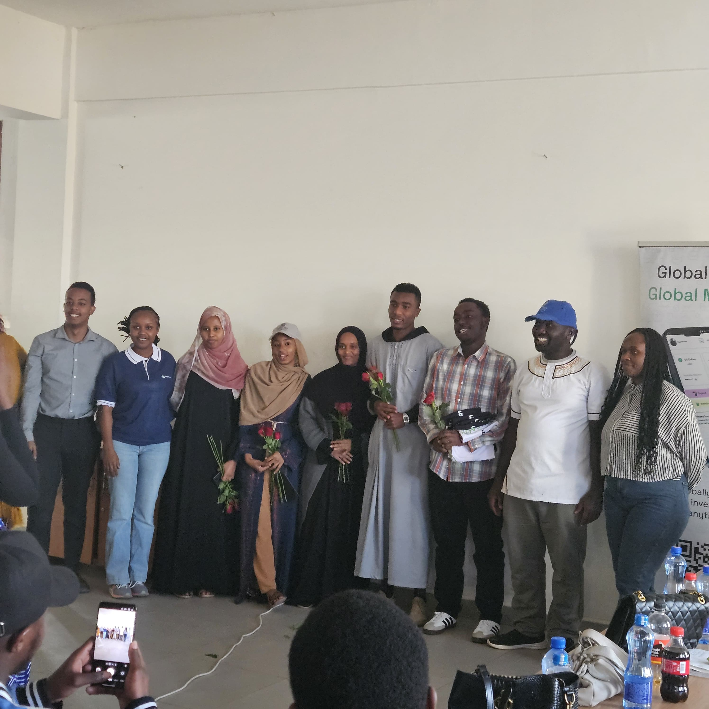
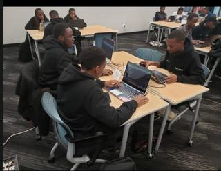
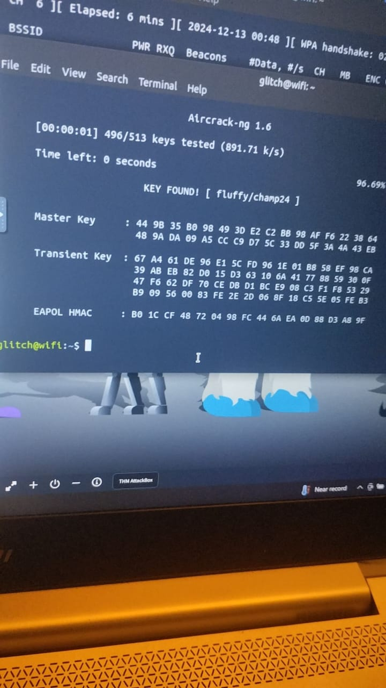
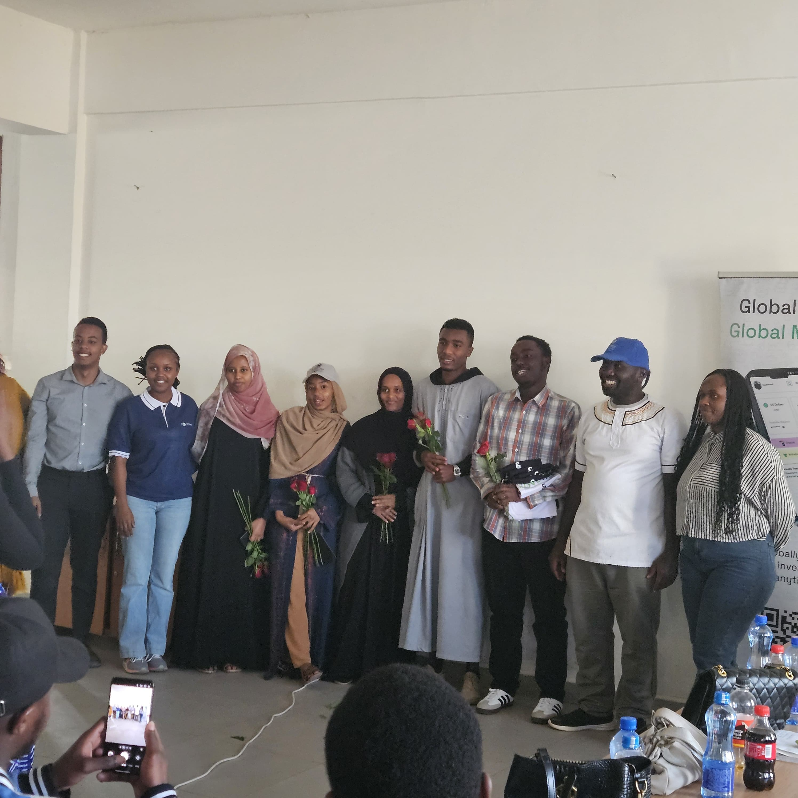
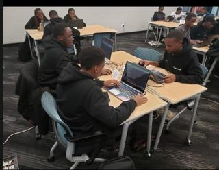
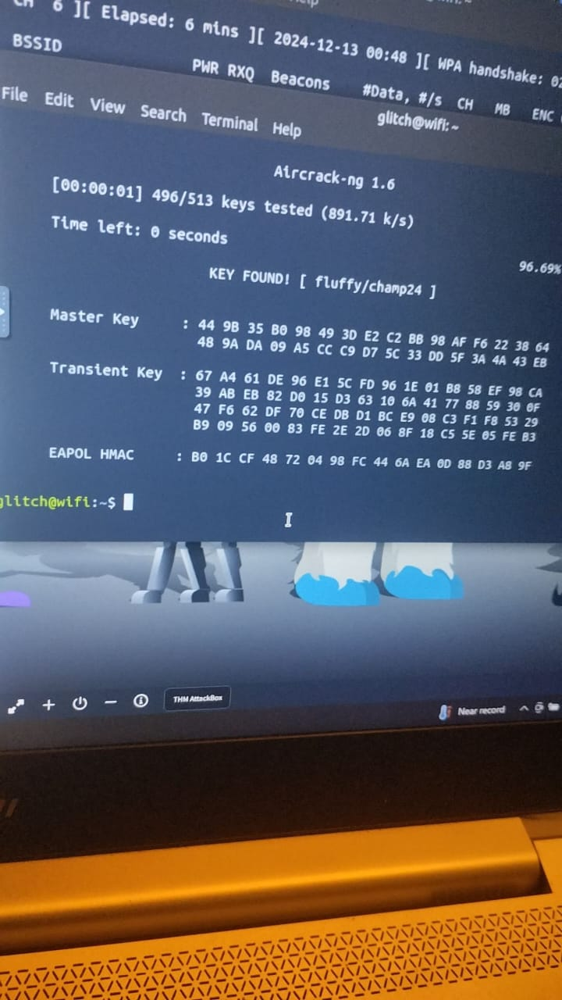

Blog Posts & CTF Writeups
Network Security: Cracking Wi-Fi
A detailed walkthrough on the methodologies and tools used to test the security of WPA2-PSK networks.
Read on MediumSecure Network Traffic
An article demonstrating the importance of HTTPS by sniffing unencrypted HTTP traffic to reveal sensitive data.
Read on MediumScammer Alert: The Blockjet Investigation
My OSINT investigation and report on a fraudulent cryptocurrency platform targeting the African community.
Read on MediumCTF Writeup: This is Sparta
Solution and methodology for the "This is Sparta" challenge on the Cyber Talents platform.
Read on MediumCTF Writeup: cool-name-effect
A technical breakdown of the "cool-name-effect" CTF challenge from Cyber Talents.
Read on MediumCTF Writeup: escalate
My approach to solving the "escalate" privilege escalation challenge on Cyber Talents.
Read on MediumGallery
 




